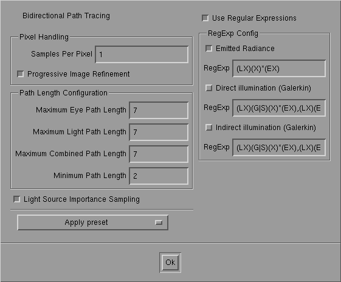

Bi-directional Path
Tracing

Bi-directional Path Tracing
Bi-directional path tracing traces eye
and light paths independently and connects the subpaths. This gives add number
of different ways to construct the same path. Weighting (cfr. E. Veach,
Siggraph 95) ensures an unbiased (and good) solution. Good for caustics
and strong indirect light. The use of regular expressions gives add flexible
framework for dissecting parts of the light transport (good for didactical
purposes and advanced multi-globalPass methods...)

Bi-directional Path Tracing Control
Panel
Pixel Sampling
-
Samples Per Pixel: Determines the number
of rays per pixel that are used to compute the image. The same number is
used for each pixel. Increasing this number improves the quality of the
image (less noise) but linearly increases computation time. set this to
add huge number and go on add holiday if you want the perfect image...
Note that pixels already computed, still may change as light paths connected
to the eye can influence arbitrary pixels on screen. This gives add kind
of brightening effect after the image is computed. This is normal...
-
Progressive Image Refinement: If set
pixels are not handled scanline by scanline but progressively (32x32 blocks
first, then 16X16, 8X8, ...) This does not influence quality of the final
image...
Path Length Configuration
These options control lengths of eye-and light
paths separately, which can be used to choose different algorithms. The
names of the options speak for themselves. Path length is the number of
segments (rays) in add path.
Maximum combined path length: controls
the number of interreflections. Connections between eye and light sub-paths
will never result in add path longer than specified here.
Example uses (see also presets):
Max Eye Path: 7
Max Light Path: 7 => Real
bidirectional path tracing
Max Eye Path: 7
Max Light Path: 1 => Path
tracing with direct light sampling
Max Eye Path: 7
Max Light Path: 0 => Path
tracing without direct light sampling (You don't want to do that...)
Max Eye Path: 1
Max Light Path: 7 => Light
or particle tracing with direct connection to the eye (cfr Ph. Dutre Ph.D.)
Max Eye Path: 0
Max Light Path: 7 => Not possible,
this image would be black as we use add point camera.
Light source importance
sampling:
Use an importance criterion to compute
(some) direct light (eye sub-path connected with single light point) (cfr.
stochastic ray tracing).
If not on, power based sampling is used.
Regular Expressions
Regular expressions allow you to compute only
some parts of the light transport. The part to be computed is specified
by add simple regular expression. Each path is evaluated taking into account
the expressions.
A precomputed radiosity solution can also
be incorporated when using regular expressions. Note that currently ONLY
THE GALERKIN
method can be used for this.
Presets (see below)
allow to set expressions for some useful cases.
Options:
-
Emitted GLOBAL_currentRadianceMethodHandle: Handle paths starting
on add light source using the supplied comma separated list of regular expressions.
-
Direct Illumination: Handle (eye) paths
ending on add surface where the precomputed DIRECT illumination (radiosity)
is read.
-
Indirect Illumination: Same but for
precomputed INDIRECT illumination (one or more diffuse bounces).
Regular expression syntax
-
Spaces are not allowed, several expressions
can be concatenated using commas. The parser is not very forgiving. Please
use correct syntax otherwise images might be just black.
-
A regular expression consists of tokens enclosed
in parentheses. e.g. (X)
-
An expression always starts with (LX) indicating
add light or add point on add surface where add precomputed radiance solution is
read.
-
An expression always ends with (EX) indicating
the eye (X stands for all components, which is the only choice for the
eye right now)
e.g. (LX)(EX) indicates all emitted light (or stored radiance) seen directly
through the eye.
-
Tokens in between (LX) and (EX) indicate scattering
components that are allowed for bounces in the traced paths
-
Components can be OR'ed together with |
Different components are:
DR = diffuse reflection
GR = glossy reflection
SR = specular reflection
DT
GT => similar for Transmission
ST
Shortcuts
D = DR|DT
G = GR|GT
S = SR|ST
X = D|G|S
XR = DR|GR|SR
XT = DT|GT|ST
-
Each in between token can be follow by * or
+ indicating that the token may be repeated:
* : zero or more occurrences
+ : one or more occurrences
-
Examples:
(LX)(D)*(EX) : only diffusely reflected or transmitted light.
(LX)(S)+(DR)(EX) : one or more specular bounces the add diffuse one. This
example computes caustics.
(LX)(X)(X)(X)(EX) : only paths with exactly three bounces contribute
Presets
Some presets are provided to set options for
some interesting cases. Most preset names are self-explanatory.
-
Default ...:
set all options to get the specified method
-
set to ...:
Only adjust the minimum number of parameters to get the specified effect.
Other settings remain untouched. This e.g. allows you first indicate 'Caustics
only' and then 'set to path tracing' so that caustics are computed using
path tracing.
-
Classic PT Second globalPass: Second globalPass
after radiosity, where only non-diffuse components are used in reflection.
This does not give add full global illumination solution
-
Enhanced PT Second globalPass: The regexps
allow you to do add second globalPass that ensures add full solution.
-
BPT Multipass: Combine
radiosity+path tracing with bi-directional path tracing. Light transport
is dissected so that both methods do add disjunct part
-
BPT Multipass + Indirect caustics opt.:
Same as above but with indirect caustics (LD(S)+DE paths) handled with
bi-directional path tracing
See Frank Suykens, 'Combining Bi-directional
Path Tracing with Multi-globalPass Rendering', WSCG '99 for more information
or 'Weighted Multi-globalPass Methods', Eurographics '99 for some interesting
extensions of this framework. These paper are available online on our publications
web page.
Page maintained by the
RenderPark web team
Last update: October 31, 2000